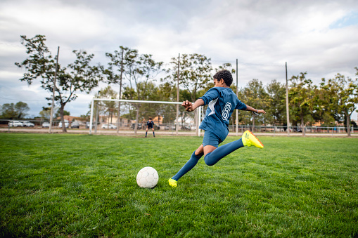

Tennis
a game in which two or four players strike a ball with rackets over a net stretched across a court.
How many players play the tennis
Tennis is a game played on a rectangular-shaped court, which can be one of many surfaces. It is either played with two players (singles match), or four players (doubles match). Players stand on opposite sides of the net and use a stringed racquet to hit the ball back and forth to each other.
STRATEGY OF THE GAME
1. Play to your strengths
2. Attack your opponents weakness
3. Hacking (Pusher)
4. Play Aggressive
5. Opening up the Court
6. Bring the net into play.
7. Change it up.
General Rules of Tennis
A ball must land within bounds for play to continue; if a player hits the ball outside of bounds, this results in the loss of the point for them.
Players/teams cannot touch the net or posts or cross onto the opponent’s side.
Players/teams cannot carry the ball or catch it with the racquet.
Players cannot hit the ball twice.
Players must wait until the ball passes the net before they can return it.
A player that does not return a live ball before it bounces twice loses the point.
If the ball hits or touches the players, that counts as a penalty.
If the racquet leaves the hand or verbal abuse occurs, a penalty is given.
Any ball that bounces on the lines of boundary are considered good.
A serve must bounce first before the receiving player can return it.
Is it the team game
Yes tennis is a team give.
When was game invented
Who invented the game of tennis? The inventor of modern tennis has been disputed, but the officially recognized centennial of the game in 1973 commemorated its introduction by Major Walter Clopton Wingfield in 1873. He published the first book of rules that year and took out a patent on his game in 1874.
ranking Country Regional Popularity
1 Australia 100
3 New Zealand 70
4 Switzerland 69
5 United Kingdom 63
6 Belgium 57
7 Singapore 56
8 United States 56
9 Philippines 51
10 Italy 51
11 Madagascar 49
12 Netherlands 49
13 Ireland 47
14 Canada 47
15 Cameroon 42
16 Lao People's Democratic Republic 41
17 Macedonia 38
18 Austria 38
19 Hong Kong 38
20 South Arfrica
Records
Record Result Record Holder(s)
Most Titles 109 Jimmy Connors
Most Grand Slam Titles 21 Rafael Nadal
Most Tour Finals Titles 6 Roger Federer
Most Alternative Tour Finals Titles 5 John McEnroe
Most All Tour Finals Titles
(Official and Alternative) 8 John McEnroe
Most Masters Titles 37 Novak Djokovic
Most Olympics Titles 2 Andy Murray
Most Olympics Medals 2 Stefan Edberg (2),
Most Big Titles (Grand Slam, All Tour Finals, Masters, Olympics) 62 Novak Djokovic
Most ATP 500/CS Titles 24 Ivan Lendl (24),Roger Federer (24)
Most ATP 250/WS Titles 59 Jimmy Connors
Most Small Titles (ATP 500/CS, ATP 250/WS) 78 Jimmy Connors
Most Davis Cup Titles 5 Rafael Nadal , Feliciano Lopez
Most Team Cups Titles 3 Stefan Edberg
Most Hard Titles 71 Roger Federer
10 Best Tennis Players Of All Time
10. Ivan Lendl

Hailed as the player who changed the way professionals approached their diet, Ivan Lendl had a fruitful decade at the top which saw him collect at least one major per year between 1981 – 1991, winning 11 grand slams in total.
In a period where Jimmy Connors and John McEnroe dominated the men’s game, the Czech native managed to spend a total of 270 weeks as world No. 1 during his career, thus cementing his among the greatest tennis players ever to play the men’s game.
The 10 best ladies tennis players of all time
9. Andre Agassi

Andre-Agassi1Quite possibly one of the finest strikers of a ball to have ever played the game, greatness was predicted for Agassi long before he entered the professional sphere.
Victory at Wimbledon in 1992 would see him truly announce himself to the world as a 22-year-old Agassi overcame both Boris Becker and John McEnroe on his way to a five-set thriller with Goran Ivanisevic.
The fittest athletes on the planet
A great competitor, a great mover, and a tremendously smart thinker – Andre Agassi belongs in the group of the greats.
8. Jimmy Connors

1974 will always be remembered among tennis fans as the year Jimmy Connors established his dominance of the men’s game. The American won three majors that year and could have made it a Grand Slam had he not been banned from playing the French Open for signing a contract with the World Team Tennis Circuit.
7. John McEnroe

John_McEnroe_005There’s an endless list of adjectives one can use to describe McEnroe – from his talent to his temper, he is without a shadow of a doubt one of the best tennis players in history.
To this day McEnroe holds the record for most men’s singles and doubles titles combined with an incredible 155 (77 singles, 72 doubles).
6. Bjorn Borg

Borg was a teenage prodigy who played Davis Cup at 15 and was barely 18 when he won his first French Open. But being ranked No. 1 wore greatly on him.
Borg’s career-defining moment came when John McEnroe passed the Swedish star for the No. 1 ranking by defeating him at the 1981 US Open. Borg made himself the biggest “What if?” in men’s tennis history by skipping the post-match news conference and leaving the stadium without showering, taking a car directly to JFK Airport, and leaving town. He retired for the first time a few months later, with 11 Slam titles. He was only 26.
He retired for the first time a few months later, with 11 Slam titles. He was only 26, but to this day remains one of the greatest tennis players to grace the men’s game.
5. Pete Sampras

81169f5633e6ab1e1195e9b482c1ce28--goran-ivanisevic-match-pointSampras’ 2000 victory at Wimbledon arguably established him as the greatest male player of all time (until Roger Federer eclipsed him). Sampras dominated in an era when power serves were becoming the norm. What also separated him was his ability to play a chip-and-charge game and his athleticism.
List of Wimbledon winners in the open era
Sampras was never as great from the baseline as Andre Agassi was, but he didn’t need to be. The American’s 14 major titles say it all.
4. Rod Laver

Laver straddled the move from the amateur to the Open (or professional) eras of tennis, therefore not only making him one of the greatest tennis players in history but also one of the most important.
3. Novak Djokovic

Djokovic’s victory over Federer in the 2014 Wimbledon final made him – not Rafael Nadal – the first man to defeat Federer at all four Grand Slams. Djokovic had also eclipsed what appeared to be a fading Nadal as the player with the best chance to beat Federer’s major record, but both Nadal and Federer have brought those ambitions to a halt as they’ve both seen a massive resurgence over the past few years.
It doesn’t hurt that Djokovic has a slight advantage in head-to-head matches against both Federer (27-23) and Nadal (30-28), and he certainly made hay while the sun shone in men’s tennis, and the youngest of the big 3 is still going strong with a Wimbledon title in 2019 and Australian Open title in 2020. In 2021 the Serbian won the Australian, French Open, and Wimbledon titles, bringing his tally to 20 grand slams.
2. Roger Federer

Roger_Federer_(26_June_2009,_Wimbledon)_2_(crop-2)Federer was only 19 when he seized his 2001 fourth-round Wimbledon upset against seven-time champ Pete Sampras to signal the beginning of the passing of the torch between the two tennis greats.
Sampras hadn’t lost at the All England Club in five years. Federer went on to cement his claim for the award of best tennis player to ever play the men’s game by passing Sampras’ record of 14 Grand Slam wins.
1. Rafael Nadal
greatest tennis players

There’s a new GOAT in town and his name is Rafael Nadal! While Federer made history by becoming the first man ever to win 20 Grand Slam titles, Nada did one better. At the Australian Open final on the 30th January 2022, over 5 sets – 5 hours and 24 minutes, Nadal beat Medvedev to become the greatest of all time with an unbelievable 21 Grand Slam singles titles.
King of the clay, with 13 French Open titles under his belt, and twenty one grand slam titles in total, means the race between the big three is now hotter than ever.
With a 23-16 career advantage (mostly on clay) over rival Roger Federer, the fiery Spaniard has been a force to be reckoned with since the mid-noughties.
10 Countries Where Tennis Is Most Popular
Written by Fred Simonsson in Articles
Since the beginning of the sport, tennis has always had an international flavor to it. Part of that comes from having four Grand Slams in four different countries. The truth of the matter is, a future champion can also train anywhere that has a court.
1. England
The All-England Club is the most storied location for tennis in the world. Even though they have not produced the number of champions recently that many people are hoping for, it does not get much bigger than this country in tennis circles.
One of the limitations of England is that there is minimal space for tennis courts. It is also a costly sport for a lot of players, which can frustrate those in the working class. Not only is court time expensive, but buying equipment and balls jump up quite a bit in price.
2. Australia
No study is perfect, but many argue that Australia is the most rabid country when it comes to tennis in general. It is indeed popular at both the amateur level, and when watching professionals play. Australia always has some top professional players competing on the ATP and WTA tours.
3. France
Every tennis fan knows about the French Open, and the fans who attend the matches for better or worse. They can be a bit rude at times for certain players, but they support tennis as a whole without question.
This is a sport that has been pretty popular in the country for over a century, and they have been able to produce some pretty outstanding players as well.
4. United State
Until the last few decades, the United States has been a dominant force as far as tennis is concerned professionally. The big reason why is that it has been a pretty popular sport for a while now, even if there is a lot of competition in the United States.
One reason why the United States has kept its popularity with tennis comes down to the fact that there are a lot of courts available to the general public. This makes the game relatively easy to access when it is much more of a struggle in countries that do not have as much space.
5. Switzerland
Tennis popularity in Switzerland definitely has only gone up with the best player in the world wearing the country’s colors. Roger Federer has been at the top of the game for quite a while now, but he is hardly the first Swiss to have high-level success.
Players such as Martina Hingis, Stan Wawrinka, and more have all found ways to win at a high level. Not bad for a colder country with mountainous terrain and not a ton of open space. A lot of people not only watch the sport, but play it at the recreational level in the country.
6. Spain
Like other bigger countries, tennis has a lot to compete within Spain. However, their recent success at the professional level has only increased the popularity of the sport.
Spain seems not only to love tennis, but several other racquet sports as well. In particular, padel has exploded a bit because people have smaller areas to work with.
7. Belgium
Throughout history, Belgium has always done a great job producing high-quality tennis players. Whether it is Kim Clijsters, Justine Henin, or David Goffin, the number of pros from a relatively small country is pretty remarkable.
Sandwiched in between two other countries that like tennis in France and Germany, it is pretty easy to see why there are plenty of participants.
8. Japan
Japan might not have the rich history of tennis like so many other countries on this list, but they have grown to love the sport quite a bit. There are so many people not only rooting on the top pros but also finding ways to participate.
Even though the major cities are pretty limited with space, making tennis courts a bit of a premium, there is a focus on developing top-end talent to compete with the best.
9. Germany
Steffi Graf and Boris Becker are just two of the big names to come out to Germany in the history of tennis. They don’t have a grand slam on their home soil, but that doesn’t mean that plenty of people love the sport and want to see it grow more and more.
The popularity of tennis has stayed pretty strong over the years, which has largely contributed to the amount of success they’ve had overall. It is also one of the most popular recreational activities for people to play in the country, and new chords are popping up all the time.
10. Italy
Only five Italians in tennis history have won a Grand Slam singles title in the Open Era, yet they continue to be one of the strongest all-around countries on the pro circuit.
Perhaps they get overlooked a bit because they do not have a true superstar, but recent standouts like Matteo Berrettini, Jannik Sinner, Lorenzo Musetti, and Fabio Fognini are all threats to breakthrough at any tournament.
TOP 10 TENNIS TOURNAMENTS YOU SHOULD ATTEND AT LEAST ONCE
RL360 is sponsoring Douglas Lawn Tennis Club to help the development of tennis players on the Isle of Man. Tennis is a fantastic sport to play but it’s also one of the most exciting to watch and its tournaments are some of the hottest sporting tickets on the planet. At the highest level, thousands will flock to see the world’s greatest players compete live on the biggest stages. While the pandemic disrupted the 2020 season, some major competitions will finally take place this year and with this in mind, we’ve compiled a list of 10 tennis tournaments you should attend at least once in your life.
1. WIMBLEDON

Where else to start but with the most prestigious tennis tournament of all: Wimbledon. Of the 4 Grand Slam tournaments, Wimbledon attracts the most attention and remains the favourite of fans and professional tennis players alike. The tournament has a long and illustrious history dating back to 1877, when it was played on the grand lawns of the All England club outside of London. Besides world-class tennis, Wimbledon is also infamous for Royal appearances, celebrity spotting, fresh strawberries and cream and the famous all-white dress code.
2. US OPEN

The US Open is a continuation of one of the oldest tennis championships in the world: the US National Championship, which was first played in 1881 as a national men’s singles and doubles competition. Like most major tennis championships, the US Open is as much a media circus and tourist attraction as it is a sporting event, but it’s also as close as tennis comes to a festival. There’s live music to open and then throughout spectators have ready access to a host of street-food stalls, shops and bars.
3. AUSTRALIAN OPEN

Nicknamed the Happy Slam, the Australian Open is a favourite among some of the world’s best players – and not just for Melbourne’s beautiful beaches and endless supply of sushi rolls. It’s here that the world has seen some of best matches, including Novak Djokovic, who has won a record 7 Australian Open titles. Melbourne Park precinct is currently the home of the Australian Open but this hasn’t always been the case with the tournament having been played at more than a dozen other sites in its 114-year history - including Sydney, Adelaide, Brisbane, Perth and New Zealand.
4. FRENCH OPEN

The French Open is one of the most feared tournaments among top players. Roland Garros is famously the only Grand Slam tournament to be played on clay courts, a surface that slows the players and makes for gruelling and fierce matches. Many legendary players have been unable to win the career slam because of a failure to triumph at the French Open - even the great Roger Federer has only 1 win under his belt. The defending champion at the French Open is Rafael Nadal, who has won the tournament 13 times.
5. SUMMER OLYMPIC GAMES TENNIS TOURNAMENT

The Summer Games is unique among tennis tournaments because spectators can enjoy many other sporting competitions at this one incredible event. Tennis was dropped from the Summer Games in 1924 but it was later returned to the Olympic programme in 1988 and since then the tournament has only grown in importance among players and fans alike. The 9-day tournament sees intense competition between players competing for national pride, and when spectators aren’t checking out tennis, they can watch some of the world’s best athletes compete in 33 other sports.
6. THE DAVIS CUP

The Davis Cup started out as a men’s competition between USA and Great Britain but it has become the world’s largest annual international team competition – effectively the World Cup of men’s tennis. Great Britain’s men have lifted the trophy 10 times since the tournament began in 1900, most recently in 2015 when Andy Murray finally broke that 79-year wait for the trophy to come home. In contrast to the polite audiences of most tennis events, this is an unashamedly partisan event, with flag weaving and raucous cheering for the home team, creating an intense and intimidating atmosphere. The experience is unique in the sport.
7. WTA FINALS

Held in China, the year-end finale of the WTA Tour is a prestigious tournament for the top-ranked professional women’s players. It’s also one of the toughest competitions because the WTA Finals takes place at the end of the season in late October - when players have been pushed to their mental and physical limit. In spite of this, the WTA Finals see some of the best games of the season, not least of which because players are competing for a record-breaking $4.725 million first-prize cheque - the richest title in tennis.
8. ATP FINALS

The ATP Finals is the second highest tier of tennis after the Grand Slam tournaments, where the best players compete for the coveted year-end title. The tournament moves around historically and has been played in over 15 cities worldwide. After spending the last 12 years in London, this year the finals will move to Turin. This signals the end of an era for London but also professional tennis, as the move coincides with the approaching retirement of juggernaut players who have dominated the sport since 2004: Roger Federer, Rafael Nadal and Andy Murray.
9. BNP PARIBAS – INDIAN WELLS TENNIS MASTERS

BNP Paribas is one of the biggest events outside of the Grand Slam’s and end of year Tour Finals. The tournament takes place against the backdrop of sunny California so it’s little wonder it’s known as a ‘Tennis Paradise’. Every year over 400,000 fans flock to the tournament to soak up all this a stunning tourist destination has to offer - including luxury resorts, high-end shopping, dining and spas and (for a bit of variety) some world-class golf.
10. MIAMI OPEN

As you might have gathered, tennis has one of the longest histories of any modern sport. It’s unusual then for modern tournaments to make a name for themselves but the Miami Open, (which only began in 1985) is undoubtedly the place to be in the Spring. Attendance at its Hard Rock Stadium in Crandon Park has topped 300,000 people in the past - which is almost unheard of for a non-Majors tournament. The Miami Open however has a lot to offer and even if visitors get tired of watching rallies there’s plenty else to do when you’re surrounded by beautiful beaches, fabulous food and stunning golf courses.